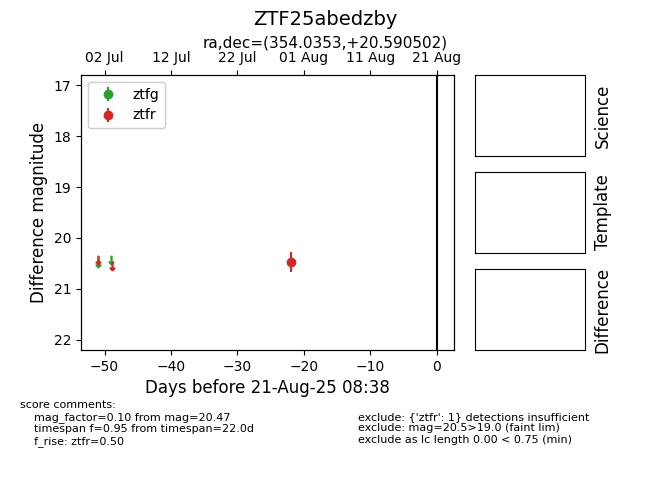

Target ZTF25abedzby at 2025-08-21 08:38, see:
FINK: fink-portal.org/ZTF25abedzby
Lasair: lasair-ztf.lsst.ac.uk/objects/ZTF25abedzby
ALeRCE: alerce.online/object/ZTF25abedzby
alt names
ZTF25abedzby (ztf,alerce)
coordinates:
equatorial (ra, dec) = (354.0353,+20.59050)
galactic (l, b) = (100.0881,-38.91808)
photometry
last ztfr=20.47
1 ztfr detections
